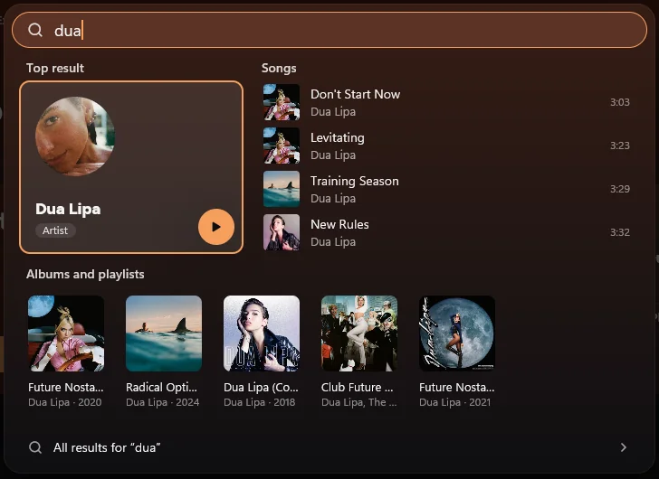
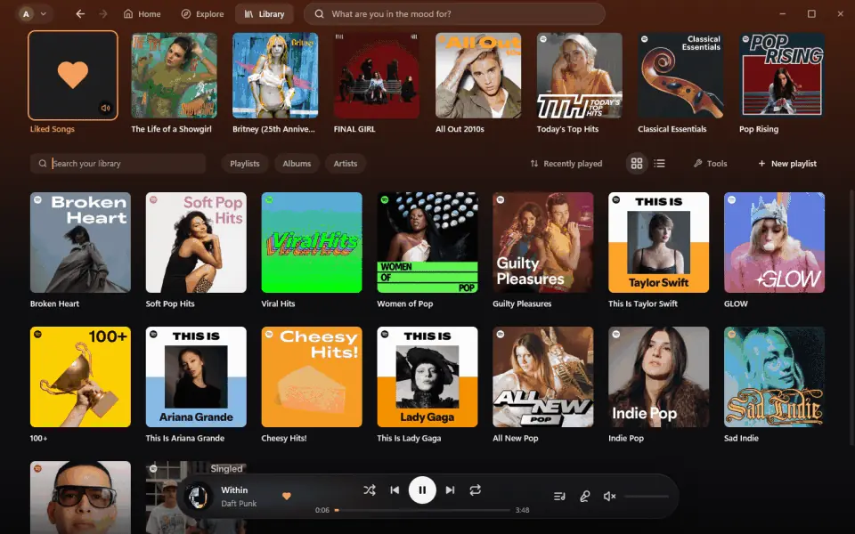
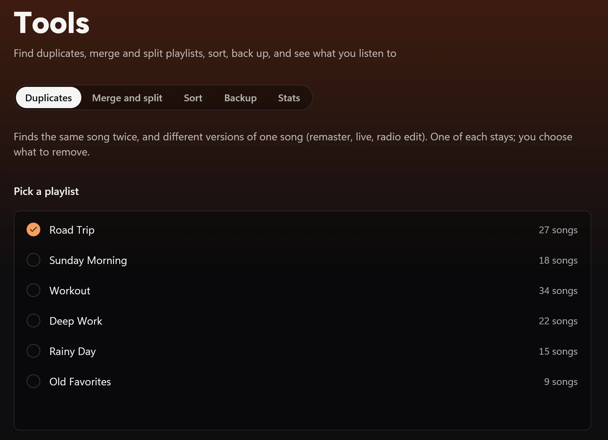
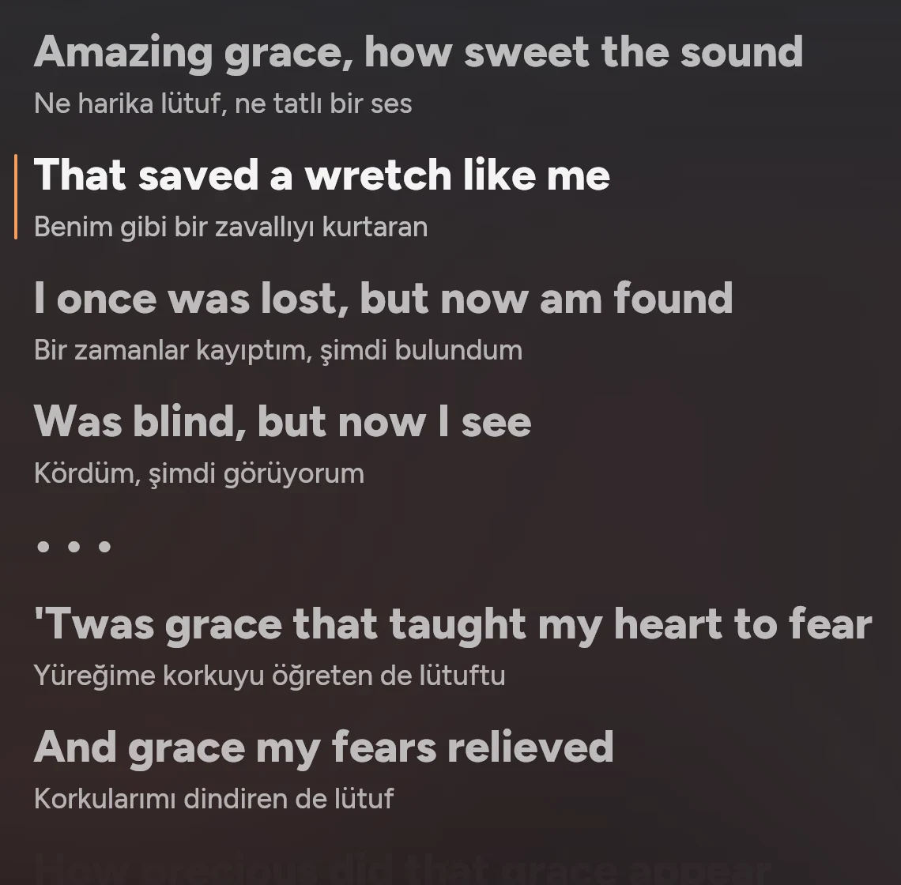
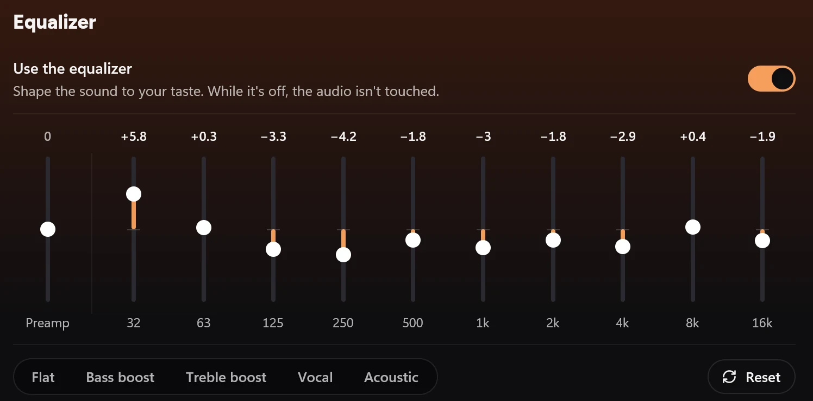

Kütüphaneni bilen arama
Ctrl K'ya bas, yazmaya başla. Kütüphanendeki ve Spotify'daki şarkılar, sanatçılar, albümler, listeler tek yerde; birkaç komut da adını yazınca çıkıyor.
CtrlK

Openify, Spotify Premium hesabını librespot ile çalar, arayüzün her pikselini gpui ile çizer. İçinde tarayıcı da yok, Electron da; açıkken yaklaşık 70 MB bellek kullanır.

Ana sayfa, Keşfet, Kütüphane, sanatçılar, albümler. Ekrandaki tek renk, o an çalan şarkının kapağından geliyor.
Ctrl K'ya bas, yazmaya başla. Kütüphanendeki ve Spotify'daki şarkılar, sanatçılar, albümler, listeler tek yerde; birkaç komut da adını yazınca çıkıyor.

Aynı şarkının kopyalarını ve farklı sürümlerini bul, listeleri birleştir ya da böl, bir listeyi kalıcı olarak sırala, JSON'a yedekle, kendi istatistiklerine bak. Yaptığın her düzenlemeyi geri alabilirsin.

Yan panelde ya da tam ekranda. İstersen her satırın altında çevirisi de çıkar.

On bant, hazır ayarlar ve ön kazanç. Kulaklığını açık OPRA veritabanında bul, düzeltme eğrisi kendiliğinden gelsin.

Albümler şarkı aralarında boşluk bırakmadan çalar. İstersen 2–12 saniyelik geçiş aç; ses dengelemenin de üç ayarı var.
Bir şarkının tek sürümü çalsın, müstehcen olanlar atlansın, sevmediğin sanatçı hiç gelmesin. Ya da herhangi bir şeyden radyo başlat.
Karanlık bir oda, sıcak bir açık tema ya da Windows hangi moddaysa o.
Telefonundaki Spotify'da bir cihaz olarak görünür. Adını Ayarlar'dan değiştirebilir, istersen kapatabilirsin.
Güncellemeler arka planda iner. Yeni sürüm iki kez açılamazsa Openify bir öncekine kendisi döner.
Arayüzün tamamı iki dilde. Medya tuşları, sistem tepsisi ve Windows'un medya penceresi de çalışır.
Her şeyin bir kısayolu var. Tam liste için uygulamada ? tuşuna bas; burada her gün kullanacakların var.
Yalnız senin hesabına kurulur, yönetici izni istemez.
Çoğu bilgisayar için x64 kurulum dosyası.
Kurulum dosyası henüz imzalı değil. SmartScreen araya girerse şunlara tıkla:
Tarayıcında Spotify'ın giriş sayfası açılır. Premium hesabınla gir, hepsi bu.
Kurulum yapmak istemiyorsan zip'i istediğin klasöre aç ve çalıştır, o kadar.
Paket şu an winget deposunda incelemede. Onaylanınca tek komut yetecek:
> winget install FurkanKY.OpenifyWindows 10 ya da 11, Rust (doğru sürümü rustup kendisi kuruyor), MSVC build araçları ve Git yeterli. API anahtarına ya da .env dosyasına gerek yok.
> git clone https://github.com/FurkanKY/Openify.git
> cd Openify
> cargo build --release
> .\target\release\openify.exeİlk build gpui'yi de derlediği için biraz sürer. Testleri cargo test --release ile çalıştırabilirsin.
Tüm dosyaların SHA-256 özetleri release sayfasındaki SHA256SUMS.txt dosyasında.
Kodu oku, bir issue aç ya da PR gönder. Kuralları ve kontrolleri Katkı sayfası anlatıyor.